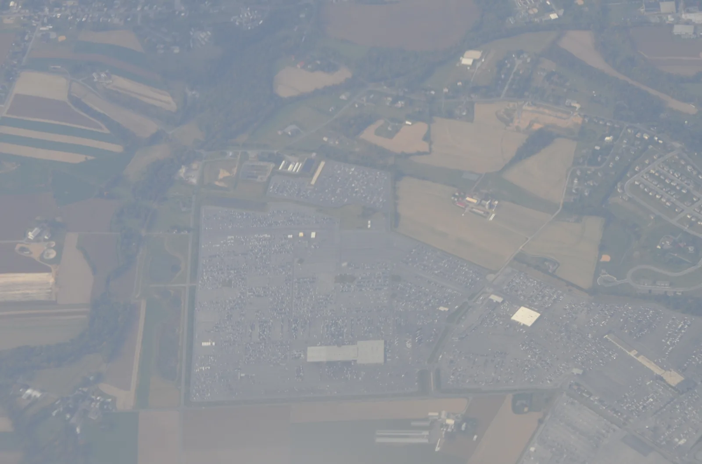
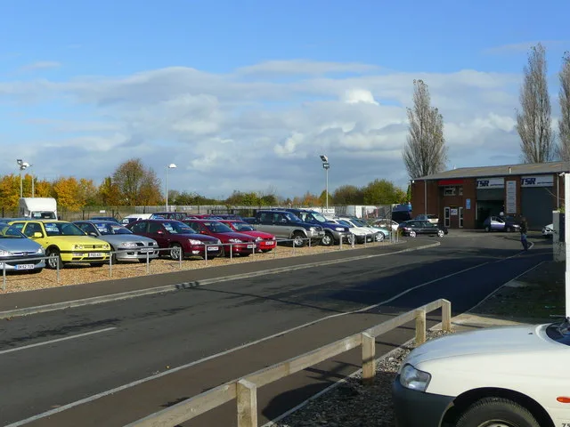
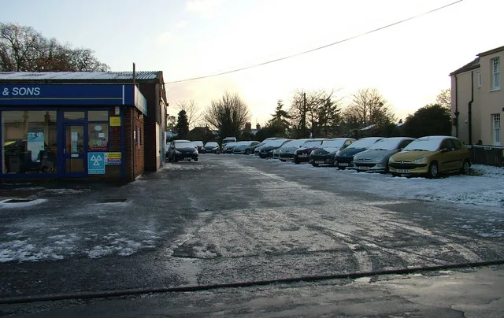
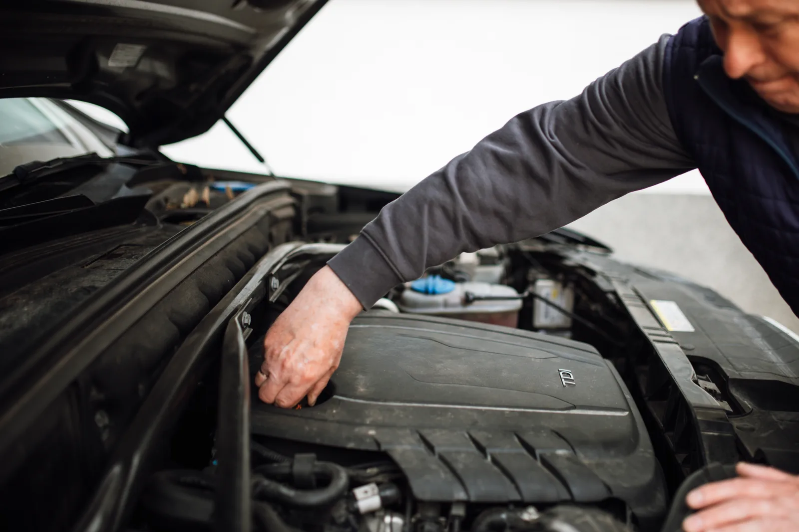

▲ 국내외 중고차 경매장은 보통 이런 대규모 야외 주차 구역에서 딜러 회원들의 입찰로 차량 주인이 바뀐다 ⓒ Wikimedia Commons (CC0)
딜러들만 참여할 수 있는 중고차 경매가 1,000번째 회차를 맞았다. KG모빌리티플랫폼이 운영하는 케이카(K Car)의 정기 자동차 경매 '위클리 옥션'이 2026년 9월 22일 기준 누적 1,000회 개최를 달성했다고 밝혔다.
2011년 3월 경기 오산에서 첫 회를 연 이후 15년 넘게 매주 빠짐없이 이어져 온 이 경매는, 누적 출품 61만7,000대 중 43만6,000대가 낙찰되며 국내 중고차 유통 구조의 한 축으로 자리 잡았다.
1. 1,000회, 61.7만대라는 숫자가 갖는 의미
매주 한 번, 15년 넘게 한 번도 거르지 않고 이어졌다는 뜻이다. 위클리 옥션이라는 이름처럼 케이카 옥션은 원칙적으로 매주 정기적으로 열려왔고, 그 결과가 1,000회라는 숫자로 쌓였다.
| 항목 | 내용 |
|---|---|
| 첫 회 개최 | 2011년 3월, 경기 오산 경매장 |
| 누적 회차 | 1,000회 (2026년 9월 22일 기준) |
| 누적 출품 대수 | 61만 7,000대 |
| 누적 낙찰 대수 | 43만 6,000대 |
| 평균 낙찰률 | 70.7% |
| 최근 3년 회차당 평균 | 출품 약 1,317대, 낙찰 약 994대 |
📍 2025년 낙찰률은 왜 80%까지 올랐나
전체 15년 누적 낙찰률은 70.7%지만, 2025년 한 해만 놓고 보면 낙찰률이 약 80%로 뛰어올랐다. 회사 측은 이를 업계 최고 수준으로 평가하는데, 사전 점검·상태 정보 제공 등 경매 운영의 신뢰도가 누적되면서 딜러들의 참여와 낙찰 확정 비율이 함께 높아진 결과로 해석된다. 실제로 지난해 케이카 옥션에 출품된 차량은 국내 중고차 경매 시장 전체 출품의 15%, 낙찰 기준으로는 19.5%를 차지한 것으로 나타났다.
2. 경매는 어떻게 진행되나 — 딜러 대상 B2B 도매 시장
케이카 옥션은 일반 소비자가 참여하는 경매가 아니다. 중고차 매입업체·딜러·수출업체 등 회원으로 등록된 사업자만 입찰할 수 있는 도매(B2B) 거래 시장이다. 즉 케이카가 매입하거나 외부에서 출품된 차량을, 회원사인 중고차 딜러들이 입찰로 사들여 각자의 매장에서 소비자에게 다시 판매하는 구조다.

▲ 경매에서 낙찰된 차량은 딜러가 매입해 각자의 매장에서 소비자에게 다시 판매한다 ⓒ Wikimedia Commons (CC BY-SA 2.0)
✅ 위클리 옥션 운영 방식
· 오산 경매장 — 매주 목요일 개최, 최대 1,700대 수용
· 세종 경매장(2022년 10월 개설) — 매주 화요일 개최, 최대 800대 수용
· O2O(온·오프라인 연계) 방식 — 회원사는 경매장에 나온 차량을 현장에서 직접 확인하거나, PC·모바일 앱으로 실시간 입찰 참여 가능
· 사전 점검 제공 — 출품 차량은 사전 점검을 거쳐 상태 정보와 사진이 회원사에 함께 제공됨
· 차량 확보 경로 — 케이카 전국 직영점의 보유 재고 및 외부 출품사를 통해 확보
케이카 옥션 회원 가입과 실시간 입찰 화면은 공식 사이트에서 확인할 수 있다. K Car 옥션 바로가기
3. 케이카 비즈니스 모델에서 경매가 차지하는 위치
케이카는 소비자에게 직접 중고차를 파는 '직영 판매' 회사로 잘 알려져 있지만, 옥션 사업은 이와는 결이 다른 축이다. 직영 매장이 케이카가 매입·진단한 차량을 소비자에게 소매로 판매하는 구조라면, 옥션은 딜러들을 상대로 한 도매 유통 채널이라는 점에서 별도의 사업 영역으로 볼 수 있다.
📍 직영 판매와 경매, 두 채널이 공존하는 이유
케이카가 매입한 모든 차량이 직영 매장에서 소비자에게 팔리는 것은 아니다. 브랜드·연식·상태 등에 따라 직영 판매에 적합하지 않다고 판단된 재고나, 외부에서 출품된 물량은 경매를 통해 처분된다. 이렇게 하면 케이카는 재고 회전을 빠르게 유지할 수 있고, 딜러들은 검증된 상태 정보가 딸린 물량을 안정적으로 공급받을 수 있다. 지난해 기준 케이카 옥션 출품량이 시장 전체의 15%를 차지했다는 것은, 이 경매가 케이카 한 회사의 재고 처리 수단을 넘어 업계 전반의 도매 유통망 역할을 하고 있다는 뜻이기도 하다.

▲ 경매로 낙찰받은 차량은 전국 각지의 중소 중고차 매장으로 흘러들어간다 ⓒ Wikimedia Commons (CC BY-SA 2.0)
4. 딜러와 소비자에게 어떤 의미가 있나
딜러 입장에서는 '믿고 살 수 있는 물량 창구'가 하나 더 생기는 셈이다. 개인 간 직거래나 소규모 매입에 의존하던 소형 딜러들도, 사전 점검 정보가 딸린 차량을 정기적으로 안정적인 경로를 통해 확보할 수 있다는 것이 경매 시스템의 핵심 장점으로 꼽힌다.

▲ 경매 출품 차량은 사전 점검을 거쳐 상태 정보가 회원사에 공개된 뒤 입찰이 진행된다 ⓒ Wikimedia Commons (CC BY 2.0)
✅ 소비자에게 미치는 간접적인 영향
· 일반 소비자는 케이카 옥션에 직접 입찰할 수 없지만, 낙찰된 차량이 전국 딜러 매장의 매물로 유통되면서 간접적으로 시장에 영향을 준다
· 경매를 통한 도매 유통량이 늘어날수록 매물 회전이 빨라지고, 특정 지역·특정 매장에 매물이 쏠리는 현상이 완화되는 효과가 있다
· 사전 점검을 거친 차량이 도매 단계에서부터 유통되면, 이론적으로는 최종 소비자 단계의 상태 불량 매물 비중을 줄이는 데도 기여할 수 있다는 것이 업계의 시각이다
· 다만 경매에서의 상태 점검과 딜러가 소비자에게 판매할 때 제공하는 성능·상태점검기록부는 별개이므로, 소비자는 최종 구매 단계에서 별도로 점검 기록을 확인해야 한다
5. 앞으로의 계획 — 온·오프라인 고도화
회사 측은 이번 1,000회 달성을 계기로 온·오프라인 시스템을 더 고도화하겠다는 방침을 밝혔다. 오산·세종 두 경매장을 O2O 방식으로 운영해 온 만큼, 향후에는 모바일 입찰 편의성 개선과 출품·낙찰 데이터를 활용한 시세 정보 제공 강화 등이 뒤따를 것으로 예상된다.
📍 경매 데이터가 쌓일수록 커지는 가치
15년간 61만 대 넘게 쌓인 출품·낙찰 데이터는 단순한 거래 기록을 넘어, 차종별·연식별 도매 시세 흐름을 보여주는 지표로도 활용될 수 있다. 중고차 업계에서는 이런 경매 데이터가 향후 시세 산정 모델이나 딜러 대상 서비스 고도화에 기초 자료로 쓰일 가능성이 거론된다.
6. 요약
케이카의 딜러 대상 경매 '위클리 옥션'이 2011년 3월 오산에서 첫 회를 연 뒤 15년 만에 1,000회를 맞았다. 누적 출품 61만7,000대 중 43만6,000대가 낙찰돼 평균 낙찰률은 70.7%, 2025년에는 80%까지 올랐다.
이 경매는 일반 소비자가 아닌 딜러·수출업체 등 회원사만 참여할 수 있는 B2B 도매 시장으로, 케이카의 직영 판매와는 별개의 유통 채널이다. 오산·세종 두 경매장을 O2O 방식으로 운영하며, 사전 점검을 거친 차량 정보를 회원사에 제공해 신뢰도를 쌓아왔다.
지난해 케이카 옥션의 출품·낙찰 비중이 국내 중고차 경매 시장의 15~19.5%를 차지했다는 점은, 이 경매가 한 회사의 재고 처리 수단을 넘어 업계 전반의 도매 유통 인프라 역할을 하고 있음을 보여준다. 회사 측은 이번 1,000회를 계기로 온·오프라인 시스템을 한층 더 고도화하겠다는 계획이다.